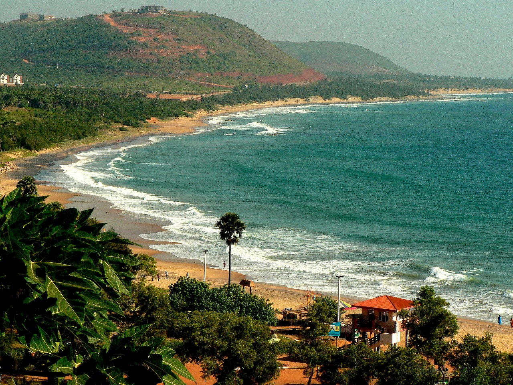

Rushikonda Beach
Rushikonda Beach is a beautiful beach located in Vizag, known for its golden sands and clear blue waters. It is a popular spot for water sports and beach activities, making it a favorite destination for both locals and tourists.
Location: Visakhapatnam, Andhra Pradesh, India
Activities: Swimming, water sports, beach volleyball, picnicking
Transportation: Easily accessible by road, located near major bus routes and the Vizag railway station.